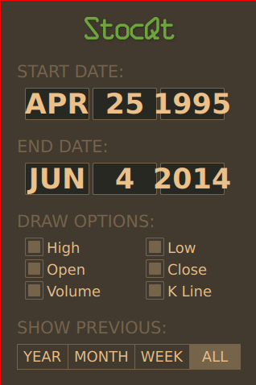
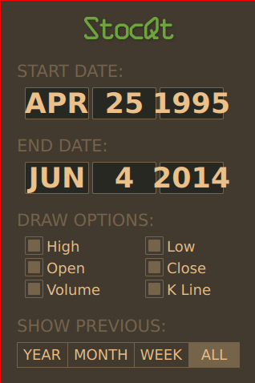
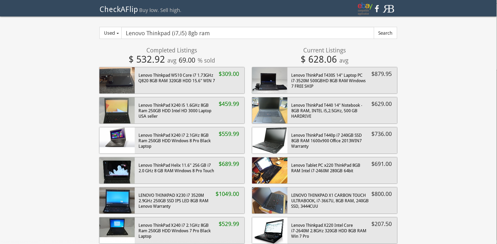

Portfolio
Here are some recent projects we have developed and contributed to:
HsQMLStocQt

 

Stock market visualization Haskell and Qt Quick.
hsqmlstockqt is a Haskell implementation of the StocQt Qt Quick demo and uses the HsQML library.
CheckAFlip
An eBay average pricing calculator used to determine the value of listings. CheckAFlip is built on Yesod and Fay with a custom REST API for mobile clients.
HSTorChat
A secure messaging application using Onion Routing and Tor Hidden Services that implements the TorChat protocol and is compatible with the original client.
HSTorchat uses the HsQML, Socks, and Attoparsec packages.
Kirq
Kirq is a standalone, cross-platform, desktop application written in Python and Qt. Kirq was designed as a wrapper for libfsqca.
Kirq was designed by Christopher Reichert along with Claude Rubinson, professor of Sociology at The University of Houston – Downtown.
A paper describing Kirq can be found here: http://link.springer.com/article/10.1007%2Fs11135-012-9694-3.
HsGUI
hsgui is a standalone GUI application template written in Haskell. hsgui provides a starting point for writing GUI apps in Haskell and provides support for GTK UI’s in glade format as well as built in command line argument parsing.
HsGUI utilizes the Haskell GTK packages.
QMLFay

Experimental QML and Haskell Integration Using the Fay Compiler.
qmlfay is an experimental QML JavaScript library generator which utilizes the Fay compiler.
HsWebApp

An example Bitcoin web application template in Haskell using Happstack and JMacro.
Phonion
Experimental VoIP and messaging via Tor Hidden Services. Phonion builds on a forked version of Mumble, which creates a library to use VoIP over Tor via TCP networking.
Phonion also uses Boost.Python and a forked version of TorChat to establish messaging services.
Okular
Improvements to Okular search and highlighting as well as several bug fixes.
Okular is built on C++ and Qt using the KDE Framework.
Tomahawk
Tomahawk is a desktop music player written in Qt/C++, which aggregates music sources. Christopher Reichert authored the meta data editor and Last FM “Loved” track feature integration for desktop client in C++.
Tomahawk Android
Authored original core of Tomahawk-Android in Java (now maintained by Enno G.
CheckAFlip iOS
CheckAFlip for iOS is built on Objective-C and utilizes the CheckAFlip API to gather and display listings.
CheckAFlip Android

CheckAFlip for Android is built on Java using the Android SDK and utilizes the CheckAFlip API to gather and display listings
WP-Evernote

Generate Wordpress posts from public Evernote notebooks. Written in PHP using the Wordpress API.